Giới thiệu GitHub
Ngày 29 tháng 9 năm 2015
GitHub là một kho lưu trữ dựa trên nền tảng Web. GitHub cung cấp khả năng quản lý mã nguồn và các phiên bản của mã nguồn theo cơ chế Git và có bổ sung một số chức năng của riêng mình. Bài viết này được viết nhằm mục đích giới thiệu cho các bạn biết GitHub hỗ trợ những gì. Nếu có thời gian, mình sẽ viết chi tiết về từng chức năng của GitHub.
GitHub
GitHub căn bản là nơi lưu trữ source code của các lập trình viên trên toàn thế giới. Nó được phát triển vào ngày 1 tháng 10 năm 2007 và được đưa vào sử dụng vào ngày 10 tháng 4 năm 2008 do Tom Preston-Werner, Chris Wanstrath, PJ Hyett sáng lập và được viết bằng Ruby On Rails và Erlang.
Để sử dụng GitHub, bạn đơn giản chỉ cần vào trang https://github.com/ để tạo một tài khoản miễn phí để sử dụng các dịch vụ.
Quản lý mã nguồn
Cá nhân
Toàn bộ repository (repo) của các bạn sẽ được hiển thị trên trang cá nhân của từng người. Phần Popular repositories là những repo cá nhân của người đó. Còn Repositories contributed to là những repo mà người đó đóng góp cho một cá nhân/tổ chức khác. Dưới đây là các repo của Jeremy Ashkenas, người tạo ra Backbone, Underscore và CoffeeScript.
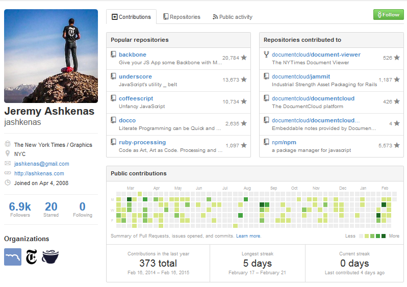
Khi bạn chọn một repos nào đó, nó sẽ hiển thị chi tiết của repo đó bao gồm source code, thông tin chi tiết các loại ngôn ngữ được sử dụng, số lượng vấn đề liên quan tới repo (issue) của các thành viên khác trên GitHub, mô tả (nếu có file README.md), giấy phép mã nguồn mở (trong file LICENSE),...
Mặc định, các repo sẽ được Public. Ngoài ra, GitHub còn hỗ trợ cho các bạn đặt chế độ Private nhưng phải trả phí mới được. Các repo có hình ổ khóa đã được đặt ở chế độ private.
Tổ chức (Organization)
Trong một tổ chức có thể chứa nhiều repo.
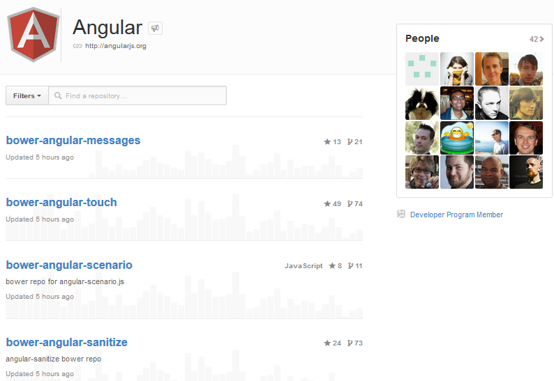Và các repo này có thể liên kết lại để tạo thành submodule của một repo nào đó. Ví dụ như ở project cocos2d-x này. Bạn thấy folder plugin có @dc25546 kế bên. Dấu hiệu này cho ta biết, plugin là một repo riêng và cũng chính là submodule của repo cocos2d-x.
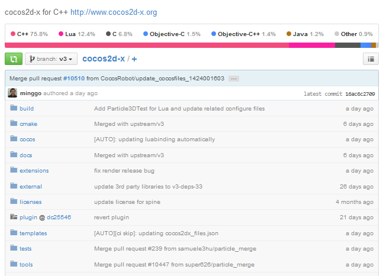Tích hợp liên tục (Continuous Integration)
Ngoài việc quản lý, GitHub còn hỗ trợ việc tích hợp liên tục để tự động chạy Test với Travis CI. Theo xu hướng bây giờ, khi làm một sản phẩm thì bắt buộc phải viết test và làm theo mô hình Test-driven development. Để thuận tiện cho việc chạy Unit Test thì ta sẽ sử dụng CI để cho chạy tự động. Những repo trên GitHub có báo build: passing đều được đánh giá rất cao. Nếu bạn cần một open-source để gắn vào project của mình thì sẽ an tâm hơn.
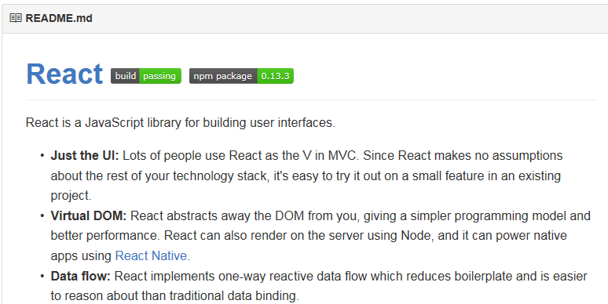Còn đây là kết quả trên Travis-CI.
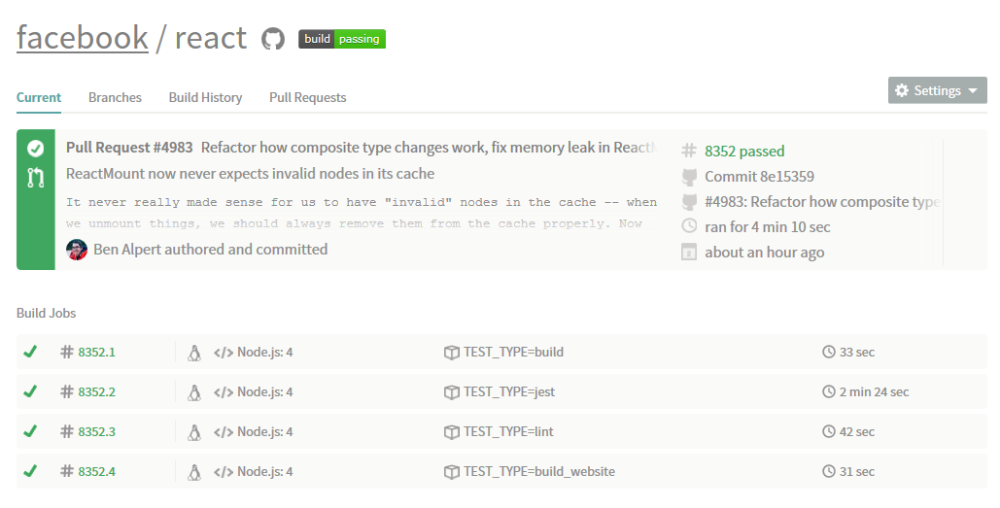Hỗ trợ khám phá công nghệ mới
Bạn vào phần Explore kế bên khung search hoặc vào https://github.com/explore để cho mình những project theo từng chủ đề hoặc theo xu hướng trong tuần.
Tìm kiếm project theo từng chủ đề
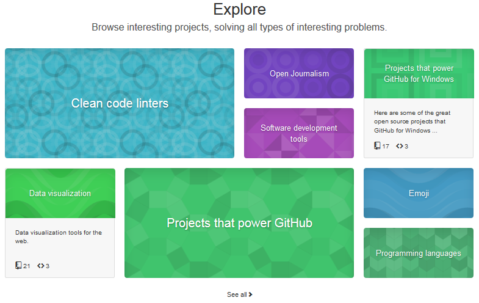Giả sử mình chọn theo chủ đề Programming Languages, GitHub sẽ cho mình biết những project liên quan tới ngôn ngữ lập trình đang được cộng đồng mã nguồn mở phát triển.

Tìm kiếm project theo xu hướng trong tuần
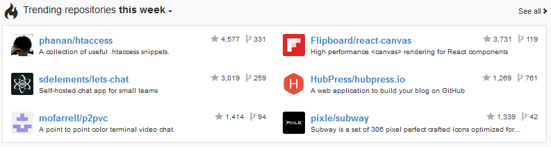Lưu trữ các đoạn mã
Phần này GitHub làm giống như trang http://pastebin.com/, http://codepad.org/. Nhưng cái hay hơn ở đây chính là hỗ trợ Public hoặc Private (miễn phí) hoặc giúp cộng đồng mã nguồn mở có thể tìm kiếm các đoạn mã nguồn của nhau.
Mục đích khi sử dụng Gists là mình thường dùng để chèn các đoạn code có hỗ trợ highlight syntax vào các trang web.
Bạn vào trang https://gist.github.com/, đây là giao diện của Gists.
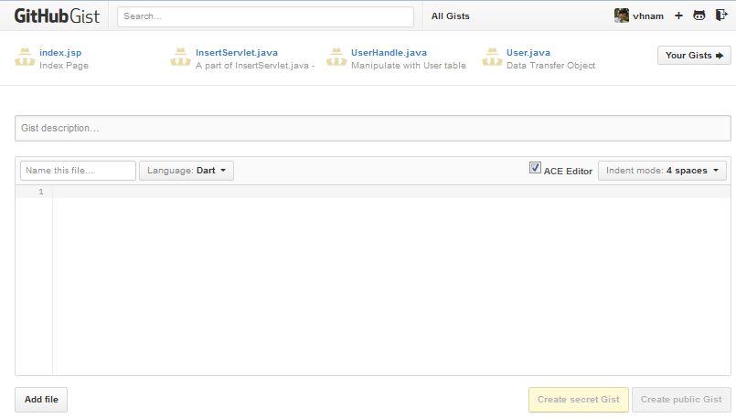Bạn nhấn nút All Gists kế bên khung search sẽ coi được toàn bộ Gists của cộng đồng GitHub.
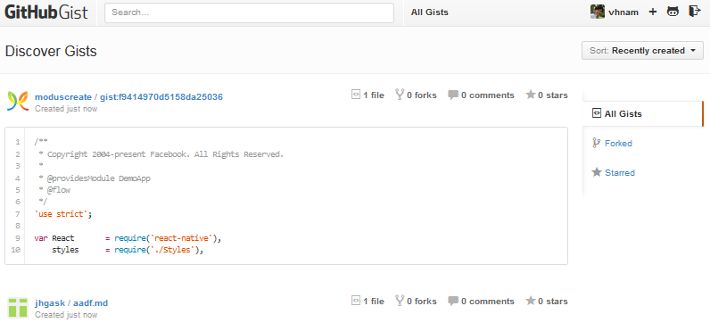Tạo một Website tĩnh
Khỏi cần ví dụ chi cho đâu xa, mình dùng chức năng GitHub Page để tạo ra trang web này. Một trang web chỉ hỗ trợ HTML, CSS và JavaScript. Ngoài ra, nó còn trợ bạn viết blog bằng file MarkDown với định dạng là *.md.
Đây là một ví dụ về một GitHub Page được viết nội dung bằng file MarkDown - http://tinntt.github.io/. Trang này do một người bạn của mình viết ra, có lẽ dùng để viết blog này nọ. Tên anh ta là Nguyễn Trương Trung Tín, vào thời điểm mình viết blog này thì anh đang là sinh viên năm cuối trường ĐH KHTN - TP.HCM, hệ Cử Nhân Tài Năng khóa 2011 và đang là cộng tác viên tại team Zalo - VNG.
GitHub Enterprise
Bạn vào trang https://enterprise.github.com/ để tìm hiểu. Để sử dụng chức năng này phải trả phí với giá là 2.500 USD cho mỗi 10 người mỗi năm ($2,500/10-user seat/year). GitHub cho bạn 45 ngày trải nghiệm miễn phí.
Mình chưa có cơ hội được thử chức năng này của GitHub. Theo mô tả thì GitHub Enterprise giống như là phiên bản GitHub bình thường và có thêm một số chức năng cho các nhóm phát triển phần mềm quy mô lớn của các doanh nghiệp. Dưới đây mình xin chụp lại phần so sánh các chức năng của bản Enterprise so với bản thường. Mình xin không dịch sang tiếng Việt vì như các bạn đã biết. Tiếng Anh chuyên ngành khi dịch sang tiếng Việt rất bưởi.
Collaboration
With GitHub Enterprise, code collaboration and review are built into the development process. Your team can share work, discuss changes, and get feedback all in one place.
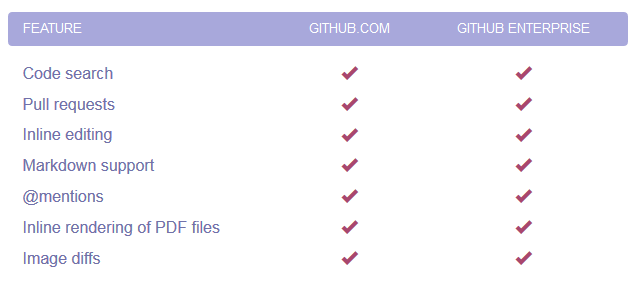Security
Manage permissions from one place with SAML or LDAP Sync. You can invite cross-team collaboration on GitHub, while providing essential controls for employees and contractors alike.
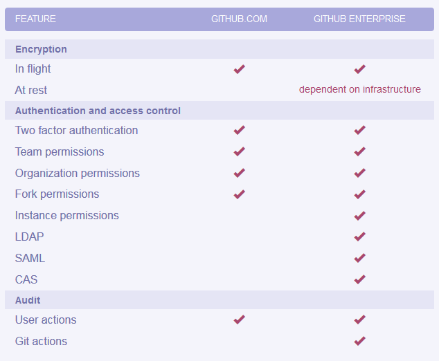Hosting Options
GitHub Enterprise is available on VMware, AWS, and OpenStack KVM—on your own servers or in a private cloud. Plus, you can configure your instance to meet your security and regulatory needs.
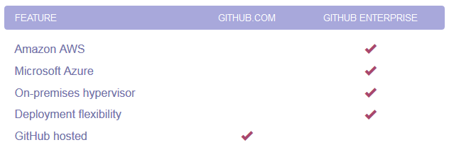Administration
Use built in tools like the Site Admin dashboard to administer your GitHub Enterprise instance. Review your license, browse user reports, initiate an SSH key audit, and more.
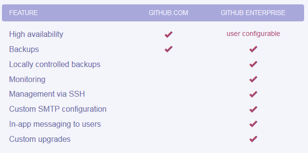Support
Our highly technical, global support team is available 24 hours a days, five days a week. With GitHub Enterprise, you can also get 24/7 help with urgent issues.
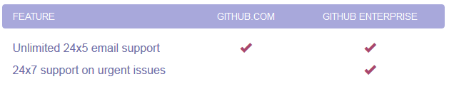Việc làm
Bạn vào trang https://jobs.github.com/. Đây chính là một trong các nguồn thu nhập chính của GitHub.
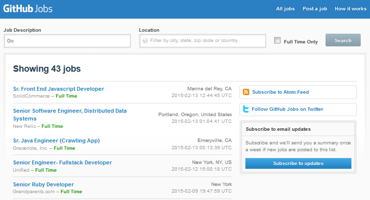